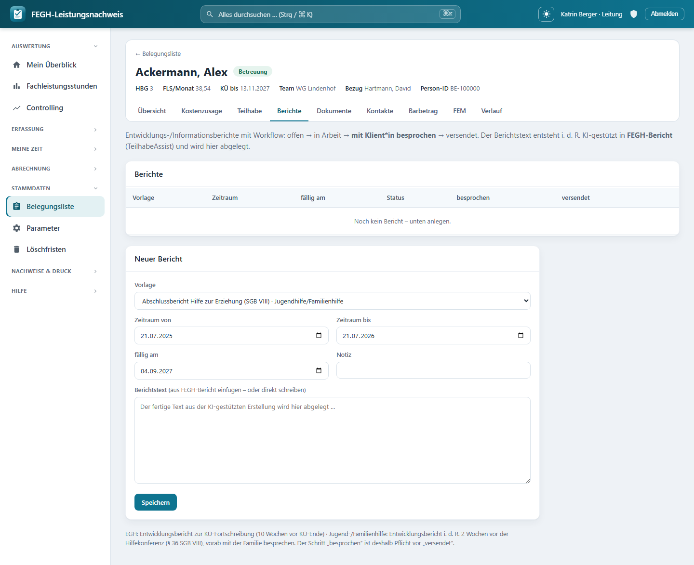

Berichte & TeilhabeAssist¶

Berichte & TeilhabeAssist je Klientin.*
Zu jeder Klientin verwaltest du hier die Berichte – Entwicklungs- und Informationsberichte mit einem festen Workflow: offen → in Arbeit → mit Klientin besprochen → versendet. Der eigentliche Berichtstext entsteht in der Regel KI-gestützt in der Desktop-App FEGH-Bericht (TeilhabeAssist) und wird hier abgelegt. Damit die KI arbeiten kann, exportiert die App auf Knopfdruck ein strukturiertes Rohpaket (Ziele, Verlaufsdoku des Zeitraums, Rahmendaten) als JSON oder Markdown; die Pseudonymisierung passiert bewusst erst lokal in der Desktop-App. Zusätzlich gibt es eine Druckansicht** mit den Anlagen Ziele und Wirkung.
Du erreichst die Seite über die Fallakte einer Klientin: Reiter Berichte. Welche Berichte fällig werden, ergibt sich aus der KÜ-Frist* (siehe Berichtsfristen).
Berichtstyp als Daten, nicht als Code
Die App kennt keinen fest verdrahteten „EGH-Bericht“ oder „Jugendhilfe-Bericht“. Jeder Berichtstyp ist ein Datensatz einer Berichtsvorlage mit Name, Bereich und einer Gliederung. So sind der EGH-Entwicklungsbericht, der Informationsbericht und – später – der Hilfeplan-Bericht nach § 36 SGB VIII schlicht verschiedene Vorlagen, ohne Programmierung.
Der Berichts-Workflow¶
Ein Bericht durchläuft vier Status. Die App führt dich der Reihe nach durch – vor dem Versand ist der Schritt „mit Klient*in besprochen“ Pflicht.
| Status | Bedeutung | Wie er entsteht |
|---|---|---|
| offen | Bericht angelegt, noch kein Text | Ausgangszustand nach dem Anlegen |
| in Arbeit | Es liegt Berichtstext vor | Wird automatisch gesetzt, sobald Text im Feld steht |
| mit Klient*in besprochen | Der Bericht wurde mit der/dem Leistungsberechtigten durchgesprochen | Knopf „✓ besprochen“ (Pflicht-Schritt) |
| versendet | An den Kostenträger übermittelt, festgeschrieben | Knopf „→ versendet“ |
In der Berichtsliste erkennst du den Status an einem farbigen Kennzeichen; die Spalten besprochen und versendet zeigen die zugehörigen Daten. Ein überfälliger Bericht (Fälligkeit überschritten, noch nicht versendet) wird beim Fälligkeitsdatum rot mit ⚠ markiert.
Besprechen ist Pflicht vor dem Versand
Nach der örV/AV Hilfeplanung ist der Bericht vor dem Versand mit der/dem Leistungsberechtigten zu besprechen. Deshalb erzwingt die App die Reihenfolge: Wer „→ versendet“ auslöst, ohne dass der Status zuvor besprochen war, bekommt die Meldung „Bitte zuerst ‚mit Klientin besprochen‘ bestätigen …“* und der Versand wird abgewiesen.
Text nach dem Besprechen geändert? Erneut besprechen
Änderst du den Berichtstext, nachdem er schon als besprochen markiert war, setzt die App den Status automatisch auf in Arbeit zurück und meldet: „Der Text wurde nach dem Besprechen geändert – bitte erneut mit der/dem Klientin besprechen.“* Das Besprochene gilt für den geänderten Text nicht mehr.
Versendete Berichte sind festgeschrieben
Ein versendeter Bericht ging an den Kostenträger und lässt sich nicht mehr bearbeiten. Beim Speicherversuch erscheint: „Dieser Bericht wurde bereits versendet und ist festgeschrieben – für Korrekturen bitte einen neuen Bericht anlegen.“ Korrekturen laufen also immer über einen neuen Bericht.
„versendet“ pflegt die Fälligkeit nach¶
Setzt du einen Bericht auf versendet, trägt die App das aktuelle Datum in versendet_am ein und aktualisiert das gleichnamige Feld am Klienten – das ist die Grundlage der bestehenden Fälligkeits-Anzeige („… versendet am“). Nimmst du einen versendeten Bericht später zurück, wird das Versanddatum wieder gelöscht, weil das alte Datum dann nicht mehr gilt.
Einen Bericht anlegen oder bearbeiten¶
Unten auf der Seite liegt das Formular „Neuer Bericht“. Klickst du bei einem bestehenden Bericht auf „Bearbeiten“, füllt sich dasselbe Formular mit dessen Werten (Überschrift „Bericht bearbeiten“, dazu ein „Abbrechen“-Link).
Diese Felder stehen zur Verfügung:
| Feld | Bedeutung |
|---|---|
| Vorlage | Auswahl aus den aktiven Berichtsvorlagen. Neben dem Namen steht – falls gesetzt – der Bereich (z. B. EGH, Jugendhilfe). |
| Zeitraum von / bis | Der Berichtszeitraum. Vorbelegt: von schließt an den spätesten bisherigen Berichtszeitraum an (sonst die letzten 12 Monate), bis ist heute. |
| fällig am | Fälligkeitsdatum. Vorbelegt mit KÜ-Ende − 10 Wochen (aus Klient.bericht_faellig_am), sonst heute + 70 Tage. |
| Notiz | Kurze interne Notiz (max. 200 Zeichen), erscheint klein unter der Vorlage in der Liste. |
| Berichtstext | Der fertige Text – aus FEGH-Bericht einfügen oder direkt schreiben. Sobald hier Text steht, springt der Status von offen auf in Arbeit. |
Fälligkeit kommt aus der Kostenübernahme
Die Vorbelegung des Fälligkeitsdatums folgt der 10-Wochen-Regel: Der Entwicklungsbericht soll 70 Tage vor Ende der Kostenübernahme (kue_bis) fertig sein. Ist keine KÜ gepflegt, setzt die App ersatzweise heute + 70 Tage. Details und Rechenbeispiel: Berichtsfristen (KÜ-Ende).
EGH und Jugend-/Familienhilfe: unterschiedliche Fristen
- EGH: Entwicklungsbericht zur KÜ-Fortschreibung, 10 Wochen vor KÜ-Ende.
- Jugend-/Familienhilfe: Entwicklungsbericht i. d. R. 2 Wochen vor der Hilfekonferenz (§ 36 SGB VIII), vorab mit der Familie besprechen.
In beiden Fällen ist der Schritt „besprochen“ Pflicht vor „versendet“.
Vorlagen: EGH und Jugendhilfe unterscheiden sich¶
Welche Vorlagen im Auswahlfeld stehen, pflegt die Administration als Berichtsvorlagen (Daten, kein Code). Jede Vorlage hat:
| Feld der Vorlage | Bedeutung |
|---|---|
| Name | Bezeichnung des Berichtstyps, z. B. „EGH-Entwicklungsbericht“ oder „Informationsbericht 1.01“ |
| Bereich | rein informativ, z. B. EGH oder Jugendhilfe – erscheint hinter dem Namen in der Auswahl |
| Gliederung (Abschnitte) | Liste der Abschnitts-Überschriften – die inhaltliche Struktur des Berichts |
| aktiv | Nur aktive Vorlagen erscheinen im Auswahlfeld |
Die Gliederung einer Vorlage taucht an zwei Stellen wieder auf: in der Druckansicht (als nummerierte Abschnitte, wenn noch kein Berichtstext vorliegt) und im Rohpaket (als „Gliederung der Vorlage“, damit die KI dieselbe Struktur nutzt). So kann eine EGH-Vorlage eine andere Abschnittsfolge tragen als eine Jugendhilfe-Vorlage, ohne dass an der App etwas geändert werden muss.
Rohpaket-Export für FEGH-Bericht (TeilhabeAssist)¶
Damit die KI-gestützte Erstellung in FEGH-Bericht (TeilhabeAssist) auf konsistenten Daten arbeitet, exportiert die App zu jedem Bericht ein Rohpaket – alles Fachliche des Zeitraums, gebündelt und maschinenlesbar. Zwei Knöpfe in der Berichtsliste:
| Knopf | Ergebnis | Wofür |
|---|---|---|
| Rohpaket ↓ | Datei FEGH-Bericht_Rohpaket_<id>.json |
Import in die Desktop-App (strukturiert) |
| als Text ↓ | Datei FEGH-Bericht_Rohpaket_<id>.md (?format=md) |
direkt als Vorbericht/Stichpunkte einfügbar |
Das Paket enthält:
- Rahmendaten aus der zum Berichtszeitraum gültigen Bewilligung (HBG, FLS/Woche, Gültigkeit, Kostenträger, Aktenzeichen),
- die Ziele (ZLP) mit Leit-/Teilhabeziel, Indikator, Status und Zielerreichungsgrad,
- die Wirkungsdimensionen (Ist → Soll, mit Anlass und Perspektive),
- die Verlaufsdokumentation des Zeitraums (chronologisch, mit Tätigkeit, Betreuer*in und Zielbezug),
- eine kleine Statistik (Doku-Einträge, Kontakte FS/BAO im Zeitraum) sowie die Gliederung der Vorlage.
Pseudonymisierung passiert lokal – das Rohpaket ist Klartext
Das Rohpaket enthält bewusst Klartext inklusive Name, Geburtsdatum und Person-ID. Die Pseudonymisierung ist Sache der Desktop-App FEGH-Bericht (deren eigenes Datenschutzmodell) und geschieht erst lokal. Behandle die heruntergeladene Datei entsprechend: Sie enthält besonders schützenswerte Daten nach Art. 9 DSGVO. Die Antworten tragen daher Cache-Control: no-store (Art-9-Klartext landet nie in einem Cache), und der Dateiname enthält absichtlich keinen Klientennamen (keine PII in Download-Logs/Dateisystem).
Jeder Export wird protokolliert
Beim Download vermerkt die App den Zeitpunkt in exportiert_am. Diese Feld-Änderung landet im Auditlog und liefert damit einen Wer/Wann-Nachweis für jeden Art-9-Export.
Druckansicht mit Anlagen (Ziele / Wirkung)¶
Über „Druck“ öffnest du eine druckfertige Ansicht des Berichts (Knopf „🖨️ Drucken / als PDF speichern“). Sie enthält:
- einen Kopf mit Vorlagenname, Klientin, Person-ID, Bezugsbetreuerin, Berichtszeitraum und – falls vorhanden – dem Besprochen-Datum,
- den Berichtstext; ist noch keiner erfasst, erscheinen stattdessen die nummerierten Abschnitte der Vorlage als Gerüst,
- die Anlage „Ziele der Ziel- und Leistungsplanung“ (Teilhabeziele, die nicht aufgegeben sind, mit Indikator und Stand/Prozent),
- die Anlage „Wirkungsdimensionen“ (Ist → Soll auf der 7er-Skala, mit Anlass und Perspektive),
- eine Unterschriftenzeile für Bezugsbetreuer*in und Leitung.
7er-Skala: niedriger ist besser
In der Wirkungs-Anlage steht der Hinweis „niedriger = besser“. Zum Hintergrund der Skala und der Dimensionen siehe Wirkungsmessung; zu den Zielen siehe Ziele der ZLP.
Rollen und Rechte¶
| Aktion | Wer darf |
|---|---|
| Berichte ansehen, anlegen, bearbeiten | alle mit Klienten-Zugriff (Bezugsbetreuer*in, Vertretung, Leitung des Teams) |
| Status setzen (besprochen / versendet / zurück) | alle mit Klienten-Zugriff |
| Rohpaket / Druck exportieren | alle mit Klienten-Zugriff |
| Bericht löschen (✕) | nur die Leitung |
Zugriff und Datenschutz¶
Team-Scoping
Die Berichte-Seite ist – wie Ziele, Wirkung und Verlaufsdoku – nur für Personen mit Klienten-Zugriff erreichbar: Bezugsbetreuerin, Vertretung und Leitung des Teams (klienten_fuer(request.user)). Rollen ohne Klientenbezug – Verwaltung und Admin – haben hier keinen Zugriff, weil ihre Klientenliste bewusst leer ist (DSGVO-Trennung). Der Versuch, einen Bericht einer fremden Klientin zu öffnen, zu speichern oder zu exportieren, wird serverseitig abgewiesen.
Besonders schützenswerte Daten (Art. 9 DSGVO)
Berichtstexte und Rohpakete bündeln Gesundheits-/Sozialdaten. Sie werden datensparsam behandelt: Der Workflow ist versioniert, der schützenswerte Berichtstext wird aber bewusst NICHT in die Historientabelle geschrieben (HistoricalRecords(excluded_fields=["inhalt"])) – so überdauert er das Löschkonzept nicht. Der Rohpaket-Export ist Klartext und nur für Berechtigte abrufbar, wird protokolliert (exportiert_am) und trägt no-store. Exportiere nur, was für die Berichtserstellung gebraucht wird, und behandle heruntergeladene Dateien wie besonders schützenswerte Dokumente.
Für Neugierige: Technik dahinter¶
Nur zur Nachvollziehbarkeit
Diese Seite dient dem Verständnis; für die Bedienung brauchst du sie nicht. Die Namen unten entsprechen dem echten Code.
- Seiten-View:
nachweis/views_berichte.py→berichte(request, pk). Lädt die Klient*in überservices.klienten_fuer(request.user), listetklient.berichte(select_related("vorlage")), reicht die aktivenBerichtsvorlage.objects.filter(aktiv=True)undBerichtsStatus.choicesdurch und berechnet die Vorbelegungenfaellig_default(ausklient.bericht_faellig_am, sonst heute + 70 Tage),von_default(Anschluss an den spätestenzeitraum_bis, sonst −365 Tage) undbis_default(heute). - Speichern:
bericht_speichern(POST). Blockiert das Ändern eines versendeten Berichts; setzt Vorlage/Zeitraum/Fälligkeit/Notiz (Notiz auf 200 Zeichen); wenninhaltsich ändert und der Status besprochen war, Rücksprung aufIN_ARBEITundbesprochen_am = None; sobald Text da ist und der StatusOFFENwar, automatischIN_ARBEIT. - Workflow-Status:
bericht_status(POST). Erzwingt vorVERSENDETden ZustandBESPROCHEN; setztbesprochen_am/versendet_am; bei Versandtype(b.klient).objects.filter(pk=...).update(versendet_am=…); bei Rücknahme eines versendeten Berichts wirdversendet_amwieder aufNonegesetzt. - Löschen:
bericht_loeschen(POST) – hinterservices.ist_leitung(request.user), sonstHttpResponseForbidden; nur innerhalbklienten_fuer(request.user). - Rohpaket:
bericht_rohpaket(request, pk)(GET) mit?format=json(Default) oder?format=md. Baut die Daten in_rohpaket_daten(b)(Rahmendaten ausklient.aktive_bewilligung(zeitraum_bis), Ziele,wirkungseinschaetzungen, chronologischeleistungenmit Doku und Zielbezug, Statistik FS/BAO) und die Markdown-Fassung in_rohpaket_markdown(d). Setztexportiert_am(save(update_fields=["exportiert_am", "geaendert"])),Content-Dispositionohne Klientenname undCache-Control: no-store. - Druck:
bericht_druck(request, pk)→ Templatenachweis/templates/nachweis/bericht_druck.html. Anlagen: Handlungsziele (art="handlungsziel", ohneZielStatus.AUFGEGEBEN) undwirkungseinschaetzungen(order_by("datum")); Fallback auf dievorlage.abschnitte, wenn keininhalt. - Modelle:
nachweis/models.py→Bericht(klient,vorlageFK,zeitraum_von/zeitraum_bis,faellig_am,status,inhalt,besprochen_am,versendet_am,exportiert_am,notiz,erstellt_von;@property ueberfaellig;HistoricalRecords(excluded_fields=["inhalt"])) undBerichtsvorlage(name,bereich,beschreibung,abschnittealsJSONField,aktiv). Auswahlliste:BerichtsStatus(offen / in_arbeit / besprochen / versendet). - Template:
nachweis/templates/nachweis/berichte.html(Berichtsliste mit Status-Kennzeichen.bst, Workflow-Knöpfe, Rohpaket-/Druck-Links, Anlege-/Bearbeiten-Formular). - URLs:
nachweis/urls.py→nachweis:berichte,nachweis:bericht_speichern,nachweis:bericht_status,nachweis:bericht_loeschen,nachweis:bericht_druck,nachweis:bericht_rohpaket.